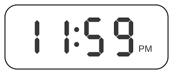

<ion-content>
  <!-- Contenedor principal con diseño fijo -->
  <div class="main-container">
    <!-- Contenedor superior dividido -->
    <div class="top-container">
      <div class="left-section">
        
      </div>
      <div class="right-section">
        
      </div>
    </div>

    <!-- Botones -->
    <div class="button-grid">
      <ion-button class="big-button" expand="block" [routerLink]="['/telefono']">
        <ion-icon name="call-outline"></ion-icon>
      </ion-button>

      <ion-button class="big-button" expand="block" [routerLink]="['/hoja-medica']">
        <ion-icon name="medkit-outline"></ion-icon>
      </ion-button>

      <ion-button class="big-button" expand="block" [routerLink]="['/alarmas']">
        <ion-icon name="alarm-outline"></ion-icon>
      </ion-button>

      <ion-button class="big-button" expand="block" (click)="openModal()">
        <ion-icon name="mic-circle-outline"></ion-icon>
      </ion-button>

      <ion-button class="big-button" expand="block" (click)="onButtonClick(5)">
        <ion-icon name="lock-closed-outline"></ion-icon>
      </ion-button>

      <ion-button class="big-button" expand="block" [routerLink]="['/perfil']">
        
      </ion-button>
    </div>
  </div>

  <!-- Modal -->
  <ion-modal [isOpen]="isModalOpen" (ionModalDidDismiss)="closeModal()" cssClass="custom-modal">
    <ng-template>
      <div class="modal-content">
        <ion-button expand="block" class="large-button" (click)="onOptionSelected('Opción 1')">
          LLamar a cuidador
        </ion-button>
        <ion-button expand="block" color="secondary" class="large-button" (click)="onOptionSelected('Opción 2')">
          Narrador de voz
        </ion-button>
        <ion-button color="danger" expand="block" class="large-button" (click)="closeModal()">Cerrar</ion-button>
      </div>
    </ng-template>
    
  </ion-modal>
</ion-content>
